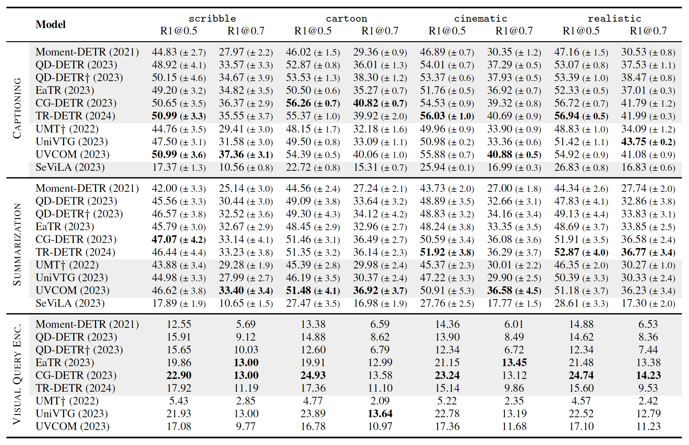

Please read: This dataset contain synthetic images and despite manual filtering the dataset might still contain sensitive/unpleasant/hallucinating images. If you find any such images, please report them to us. We will remove them from the dataset. The images in this dataset are synthetic and do not represent real images. The dataset is intended for research purposes only and should not be used for any other purposes.
Localizing events in videos with semantics queries: so far, the community has only focused on natural language query-based video event localization. Our benchmark ICQ focuses on a more general scenario: localizing events in video with multimodal queries.
Dataset

Examples of ICQ-Highlight.

Distribution of ICQ-Highlight.
Benchmark

Model performance (Recall) on ICQ.
Model performance (mAP) on ICQ.
Disclaimer
License
The annotation file is licensed under the CC BY-NC-SA License - see the LICENSE file for details.
Acknowledgements
We would like to thank the following projects/people for their contributions to this project.
- Datasets: QVHighlights
- Codebases:
BibTeX
TBD